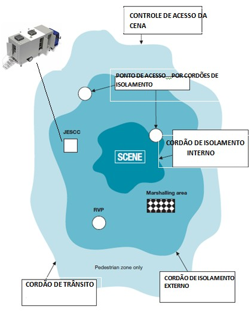

GERENCIAMENTO DA CENA

Scene Access control = CONTROLE DE ACESSO DA CENA
Fornece ponto de convergência para serviços de apoio antes da área de entrada.
Cordon Access point = PONTO DE ACESSO POR CORDÕES DE ISOLAMENTO
Inner cordon = CORDÃO DE ISOLAMENTO INTERNO
Protege do perigo e da potencial cena do crime. Inicialmente será controlada pela polícia e pelos bombeiros, que manterá distantes as pessoas dispensáveis.
JESCC (Joint Emergency Services Control Centre) = CENTRO DE CONTROLE DOS SERVIÇOS CONJUNTOS DE EMERGÊNCIA
RVP (Rendez-Vous Points) = PONTOS DE ENCONTRO
Marshalling Area = ÁREA DE APOIO
Pedestrian Zone Only = Área Exclusiva para Pedestres
Externo Cordon = CORDÃO DE ISOLAMENTO EXTERNO
Forma uma área de controle ao redor do cordão interno. Somente pessoas cuidadosamente examinadas têm acesso.
Traffic Cordon = CORDÃO DE TRÂNSITO
Previne a entrada de veículos não autorizados.
Onde apropriado, os locais serão estabelecidos de acordo com a direçã
5.1 Cordões de isolamento
5.1.1 Os cordões de isolamento são posicionados ao redor da cena pelas seguintes razões:
5.1.2 Deve-se notar que o acesso não autorizado ao site de um incidente de grandes proporções poderia prejudicar ambos o resgate e a investigação. Autorização de acesso podem ser obtidas com o Centro de Controle dos Serviços Conjuntos de Emergência.
5.1.3 Três cordões serão estabelecidos. Isto será feito pela polícia juntamente com outras agências (veja a Figura 5, Gestão da Cena):
5.1.4 Em incidentes terroristas ou supostamente terroristas, é crime violar uma proibição ou restrição imposta pela lei Ato de Terrorismo 2000. Isso inclui transpassar um cordão de isolamento policial.
5.1.5 Para todos os incidentes terroristas conhecidos ou suspeitos, todos os funcionários devem estar cientes da possibilidade de dispositivos secundários. A polícia será responsável pela verificação de pontos de encontro, áreas de apoio, Centro de Controle dos Serviços Conjuntos de Emergência e cordões de isolamento na busca de objetos suspeitos.
5.2 Cordão interno
5.2.1 A polícia controlará todas as entradas e saídas do cordão interno através de um ponto de controle. Este será gerido por cordões de ‘Bronze’.
5.2.2 O Corpo de Bombeiros é responsável pela gestão da segurança de todos os funcionários dentro do cordão interno. Em incidentes terroristas, o gestor de cena do Comando do Contra Terrorismo também deverá ser consultado sobre questões de segurança.
5.2.3 Uma vez colocados os cordões, as pessoas sem função ou que não estão devidamente vestidas será direcionadas para fora da cena.
5.2.4 Para auxiliar na identificação do pessoal autorizado, estes devem estar devidamente vestidos e informados. Os oficiais a cargo do cordão de isolamento interno irão distribuir braçadeiras e registrar todo o pessoal já dentro ou entrando pelo cordão interno.
5.2.5 A polícia e o Serviço de Ambulância de Londres, trabalhando em conjunto com o Corpo de Bombeiros, irão também registrar e verificar seu próprio pessoal em serviço a entrar pelo cordão interno. Além disso, a polícia irá registrar os representantes das concessionárias e outros investigadores.
5.2.6 O Corpo de Bombeiros de Londres tem um alarme de evacuação de emergência ao qual o pessoal trabalhando no cordão interno cordão deve estar atento e responder, se a área se tornar perigosa. O Oficial dos Bombeiros irá emitir repetidos apitos curtos e informar um ponto seguro para onde todos deverá se dirigir.
5.2.7 As equipes de serviços não emergenciais que estiverem dentro do cordão de isolamento serão direcionadas aos veículos de comando apropriados antes de adentrarem o cordão interno.
5.3 Cordão externo
5.3.1 A polícia irá controlar todos os pontos de entrada e saída do cordão externo. Prestadores de serviços não emergenciais que solicitarem acesso pelo cordão externo serão avaliados no Centro de Controle de Acesso a Cena (ver abaixo) antes de serem liberados. Não será dado acesso ao cordão interno.
5.3.2 O veículos de comando/controle dos serviços de emergência devem ser posicionados entre os cordões interno e externo, assim como os pontos de encontro e a área de apoio (ver abaixo).
5.4 Cordão de Trânsito
5.4.1 O cordão de trânsito é criado para restringir o acesso de veículos à área circundante à cena.
5.4.2 Medidas imediatas devem ser tomadas para garantir a livre passagem do tráfego de emergência de e para a cena do incidente e evitar o congestionamento na cena e em seus arredores.
5.4.3 Todos os serviços de emergência, especialistas e voluntários serão direcionados como segue: serviços de emergência para o ponto de encontro, inicialmente; especialistas e serviços voluntários para o Centro de Controle de Acesso a Cena para avaliação, antes de seguir para o ponto de encontro.
5.5 Apoio Logístico
5.5.1 O nível de resposta a um incidente de grandes proporções dependerá de sua natureza, dimensão e potencial duração. A atribuição e empenho de recursos dos órgãos que responderem ao chamado serão, portanto, proporcionais, dependendo da necessidade. Desse modo, os mecanismos de apoio logístico e a gestão de recursos variarão adequadamente.
5.5.2 Embora se reconheça que a localização dos pontos de encontro e áreas de apoio iniciais será acordada após consulta entre polícia e bombeiros ‘Prata’, a localização das áreas definitivas (conforme definido abaixo) só será determinada após consulta entre polícia e bombeiros ‘Ouro’.
5.5.3 As definições genéricas a seguir descrevem as áreas / locais usados para apoio logístico e gerenciamento de recursos em incidentes de grandes proporções.
5.6 Ponto de Encontro
5.6.1 Ponto ao qual, a princípio, todos os serviços de emergência e especialistas devem ser direcionados antes da implantação do local de operações ou da área de apoio.
5.6.2 Este ponto será normalmente estabelecido na área do cordão externo e estará sob o controle de um policial devidamente uniformizado.
5.6.3 O policial irá informar ao veículo de serviço adequado dos recursos que irão chegar. Qualquer recurso que não seja imediatamente necessário será direcionado para a área de apoio.
5.6.4 Note-se que a placa Ponto de Encontro exibida nas estações de metrô de Londres é para uso da equipe da concessionária do serviço e dos Bombeiros de Londres. Não é um ponto de encontro para os fins acima expostos.
5.7 Área de Apoio
5.7.1 A área de apoio, controlada pela polícia com a ajuda dos bombeiros trajando os coletes reflexivos adequados, deve ser estabelecido entre o ponto de encontro e o local da cena. A localização definitiva será acordada entre a polícia e os bombeiros ‘Prata’. O Serviço de ambulância não costuma ser incluído na área de apoio, já que possuem locais determinados para seu estacionamento.
5.7.2 Esta área é para os recursos não imediatamente necessários no local ou que, tendo servido sua finalidade, estão sendo mantidos para uso futuro. Deve ser, portanto, uma área adequada para acomodar um grande número de veículos.
5.7.3 Áreas de apoio também podem ser usadas como áreas de briefing / esclarecimento e descanso para o pessoal envolvido no árduo trabalho árduo.
5.7.4 À medida que a emergência diminui, os utilitários e outros contratantes podem precisar manter área de apoio para a fase de recuperação.
5.8 Área de Apoio Multiagência
5.8.1 Sempre que a dimensão e a natureza de um incidente forem muito maiores do que um incidente de grandes proporções convencional, uma área de apoio multiagência pode ser necessária para acomodar a grande quantidade de recursos e apoio logístico necessário para manter as operações. Isso pode incluir alimentação, descanso e recuperação, primeiros socorros, terapia ocupacional, armazenamento de equipamentos e serviço.
5.8.2 Essas áreas só serão definidas após consulta entre Servidores de Emergência ‘Ouro’.
5.9 Área de Manutenção Multiagência
5.9.1 A natureza e a duração de um incidente podem também exigir a criação de uma zona de manutenção para guardar os recursos adicionais (principalmente serviços de emergência) antes da implantação do local definitivo das operações, para uma área de apoio designada, ou para apoiar a prestação de serviços para as áreas não diretamente afetadas pelo incidente. Essas áreas de manutenção devem ser adequadas para acolher um grande número de veículos e proporcionar facilidades adicionais, incluindo alimentação / bem-estar, coordenação, administração e informação.
5.9.2 Essas áreas só serão definidas após consulta entre Servidores de Emergência ‘Ouro’.
5.10 Centro de Controle de Serviços Conjuntos de Emergência (CCSCE)
5.10.1 O Corpo de Bombeiros, a polícia e os veículos de comando e controle do Serviço de Ambulâncias dará foco de como o incidente deve ser gerenciado. Estes veículos, juntamente com os dos serviços públicos e autoridades locais, estarão localizados próximos uns dos outros e serão conhecidos coletivamente como o Centro de Controle de Serviços Conjuntos de Emergência. Os agentes de acidentes (Prata) irão exercer sua autoridade em conjunto a partir deste ponto, de forma coordenada.
5.10.2 A importância desta função de controle conjunto não deve ser subestimada. A experiência com incidentes anteriores demonstrou os benefícios derivados do íntimo contato entre os serviços de emergência e outras agências envolvidas na gestão do incidente.
5.11 Localização de veículos
5.11.1 O oficial encarregado do primeiro veículo de comando / controle em cena deve buscar um local para os outros veículos de serviços de emergência.
5.11.2 O local deve:
5.11.3 O local ideal terá bom acesso, iluminação e banheiros. Realisticamente, isto será um pouco difícil. Uma rua larga ou um grande estacionamento podem ser utilizados como o CCSCE, na ausência de um local mais adequado.
5,11.4 A assessoria dos bombeiros em matéria de segurança contra incêndio será buscada pelos outros serviços de emergência juntamente com a localização do CCSCE. Essa assessoria poderá ser alterada se o incidente posteriormente vir a envolver substâncias químicas ou outros materiais perigosos. A escolha do local seria, então, influenciada pela direção e força do vento e gradientes. Neste caso, o assessor científico dos bombeiros (e se disponível no local, o pessoal de segurança) irá aconselhar sobre o local mais adequado para o CCSCE. O sistema de informação geográfica dos bombeiros está disponível nos veículos de comando e também pode ser usados para determinar um local adequado.
5,11.5 O oficial Prata da polícia, após consulta com os outros serviços de emergência, será responsável por confirmar ou alterar a localização dos veículos de comando / controle e estabelecerá contato entre eles.
5.11.,6 Os bombeiros ou ambulâncias irão configurar a conexão interagências (via Matel ou sistema de telefonia de campo) entre o comando / controle de veículos. Apesar de deverem estar posicionados próximos o suficiente para assegurar conexão e coordenação eficientes, a proximidade dos veículos de comando não deve comprometer as comunicações de rádio. O ideal é estarem afastados aproximadamente 10 metros.
5,11.7 Se um serviço mobiliza mais de um controle / veículo de comando para a cena, apenas um destes irá desempenhar a função de controle no CCSCE.
5,11.8 Para facilitar a identificação, luzes de identificação azuis, vermelhas ou verdes serão ligadas em cada um dos veículos dos serviços de emergência. As luzes de identificação em todos os outros veículos devem ser desligadas, salvo durante os incidentes em auto-estradas ou em outro lugar onde são necessárias para evitar acidentes.
5.12 Controle de Acesso a Cena (CAC)
5.12.1 O Centro de CAC deve ser estabelecido fora do cordão de isolamento externo, se possível, em uma área adjacente a área de apoio. O centro, que ficará sob comando da polícia, deve ser claramente identificável àqueles que desejarem entrar através do cordão externo. Se necessário, uma via de abordagem deve ser estabelecida e sinalizada.
5.12.2 O CAC será responsável pela verificação da autenticidade dos funcionários dos serviços não-emergenciais cuja presença seja requerida dentro do cordão de isolamento externo e além. Essas pessoas devem ser direcionadas para o CAC em primeira instância pela autoridade que solicitou sua presença.
5.12.3 O CAC deve manter um registro de todas as pessoas que lhe solicitaram acesso e deverão estabelecer contato com o CCSCE nesse sentido logo no início das operações. Se possível, o CAC irá estabelecer a comunicação com o CCSE por meio de rádio, telefone e fax.
5.12.4 Uma vez aceitas as credenciais da equipe, o CAC irá, se necessário, acompanhá-los a área de apoio.
5.12.5 Deve ser enfatizado que o papel do CAC é facilitar a entrada pelo cordão externo de pessoal de serviço não-emergencial cuja presença é necessária. Isso não substitui o regime
em vigor em relação ao controle e entrada pelo cordão interno.
Copyright © 2013, TEN CEL BM CESAR RODRIGUES
Created with the Freeware Edition of HelpNDoc: Easy to use tool to create HTML Help files and Help web sites